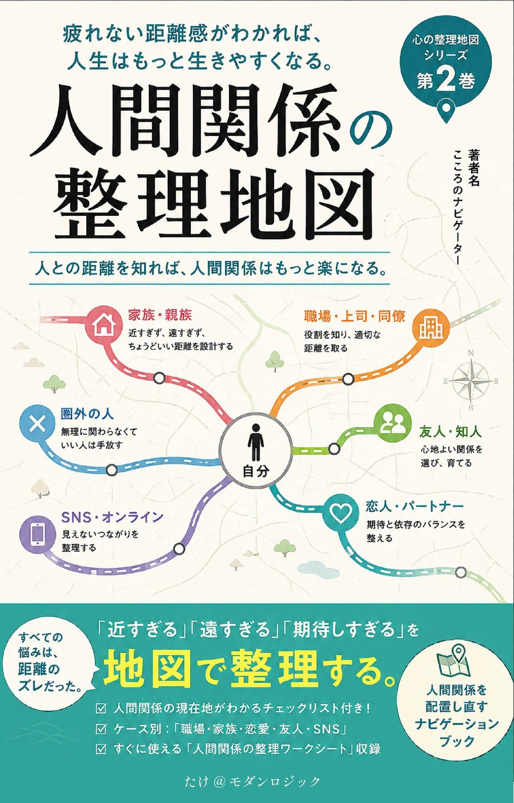

「誰とでも仲良く」は、
もうやめよう。
7つの地図で見つける、疲れない人付き合い
職場の人間関係に気を遣いすぎて、休日も疲れが取れない。家族に会うたびに、なぜか消耗してしまう。友人だと思っていた相手に、実はずっとエネルギーを奪われていた――もしひとつでも心当たりがあるなら、それはあなたの性格やコミュニケーション能力のせいではありません。ただ、人との「距離」を測る地図を、まだ手にしていないだけです。
著者：たけ＠モダンロジック ／ Kindle版・「整理地図」シリーズ第2巻

こんな感覚、ありませんか？
頑張っているのに、なぜかいつも疲れている
職場の人間関係に気を遣いすぎて、休日も疲れが取れない
家族に会うたびに、なぜか消耗してしまう
友人だと思っていた相手に、実はずっとエネルギーを奪われていた
SNSを見るたびに、なぜか気持ちが沈む
「いい人」をやめられず、いつも自分より相手を優先してしまう
断れない、NOと言えない自分を変えたい
人間関係は「能力」ではなく「距離」の問題だった
他人を変える本ではない。人との「距離」を整理する本である
能力至上主義（多くの人がハマる罠）
「コミュ力が足りないから疲れる」――そう思い込み、話し方や心理テクニックを学び続ける
- ✓コミュニケーション本を読んでも、疲れは消えない
- ✓距離を置く＝冷たい人、という罪悪感を持っている
- ✓「人間関係＝我慢するもの」という思い込みがある
- ✓誰と、どれだけ距離を取ればいいか、自分では決められない
地図思考（本書のアプローチ）
人間関係を「能力」ではなく「地図（ナビゲーション）」として扱う
- ✓近すぎる関係、遠すぎる関係を一枚の地図の上に描き出す
- ✓7つの視点から、関係の配置を可視化する
- ✓続ける・離れる・終わらせる・修復する、出口を自分で選ぶ
- ✓地図は一度描いたら終わりではなく、何度でも更新できる
本書で手に入る「7つの地図」
駅・路線・交差点・分岐・目的地――統一された「地図言語」で、関係のすべてを可視化する
距離の地図
近すぎず、遠すぎない場所を見つける。主要な人物を距離順にプロットする。
境界線の地図
自分の領域と相手の領域を分ける。境界線は壁ではなく門だと捉え直す。
エネルギー地図
与えてくれる人と、奪っていく人を見分ける。4象限マトリクスで人物を配置する。
信頼地図
信用・信頼・依存・支配の違いを知る。それは信頼か、依存かを判定する。
期待の地図
期待しすぎ、期待されすぎ、期待ゼロ――期待のズレを数値化する。
感情の交通整理
怒り・罪悪感・嫉妬・不安・執着。感情別の「止まれ／注意／進んでよい」を知る。
関係の出口地図
続ける、距離を置く、終わらせる、修復する。4つの出口を判定するチャート。
あなたの現在地を診断する
20問の診断チェックリストで、自分の「人間関係タイプ」がわかる
尽くし型
相手を優先し続け、気づけば自分がすり減っている
我慢型
不満を飲み込み続け、言葉にする前に諦めてしまう
迎合型
場の空気に合わせすぎて、自分の意見がわからなくなる
孤立型
傷つく前に距離を置き、気づけば一人になっている
健全型
近づきすぎず、離れすぎず、適正な距離を保てている
こんな方におすすめです
目次
はじめに・全7章・おわりにで構成
あなたの人生には、人間関係の地図がありますか？
「頑張っているのに疲れる」原因は性格でも能力でもなく、地図を持っていないことだと提示する
なぜ人間関係は疲れるのか
距離感のズレ、期待のズレ、役割のズレという3つのズレ構造／「いい人」であろうとするほど地図を持てなくなる逆説
人間関係には地図がある
近い・遠い×深い・浅いという4軸で関係を可視化する／「能力」ではなく「配置」の問題だと捉え直す
あなたの現在地を診断する
20問診断チェックリスト／尽くし型・我慢型・迎合型・孤立型・健全型の5タイプ判定
7つの地図をつくる（本書の中核）
距離／境界線／エネルギー／信頼／期待／感情の交通整理／出口――7つの地図を一つずつ描いていく
距離を整える7つの技術
NOと言う・頼る・断る・期待を調整する・境界線を引く・離れる勇気を持つ・許す。今日から使える一言スクリプト付き
ケース別・人間関係の整理地図
職場・夫婦／パートナー・親子・友人・恋愛・SNS・ママ友、それぞれの地図の当てはめ方
人間関係は、何度でも整理できる
地図は一度描いたら終わりではなく、更新し続けるもの／人生は、誰と歩くかで決まる
あなたの地図を広げよう
著者からの一言メッセージと、シリーズ次巻への橋渡し
距離を整える7つの技術
今日から使える一言スクリプト付き。読むだけでなく、使うための実践パート
NOと言う技術
断ることは、関係を壊すことではないと知る。
頼る技術
一人で抱え込まず、適切な相手に委ねる。
断る技術
相手を傷つけずに、境界線を伝える言い方を持つ。
期待を調整する技術
期待しすぎず、期待されすぎない関係を設計する。
境界線を引く技術
「ここから先は相手、ここから先は自分」を明確にする。
離れる勇気を持つ技術
距離を置くことへの罪悪感を手放す。
許す技術
関係を終わらせても、自分の中で整理をつける。
ケース別・人間関係の整理地図
7つの地図と出口の選び方を、身近なシーンに当てはめる
職場
上司・部下・同僚との板挟みで消耗しないための距離設計。
夫婦・パートナー
近すぎる関係にも、適正な距離が必要だと知る。
親子
毒親・過干渉・介護期――親子だからこそ難しい境界線。
友人
マウント・疎遠・腐れ縁。友情にも出口を用意していい。
恋愛
依存・執着・距離を置くべきサインを見極める。
SNS
比較疲れ・既読スルー・フォロワー疲れとの付き合い方。
ママ友・近所付き合い
避けられない付き合いの中で、無理をしない距離をつくる。
「整理地図」シリーズ
駅・路線・交差点・分岐・目的地――全巻共通の「地図言語」でつながるシリーズ
第1巻『心の整理地図』（自分を知る）に続く、シリーズ第2巻。第3巻以降は思考・不安・怒り・仕事・人生と続く予定です。
シリーズ第1巻『心の整理地図』を見る人間関係に「正解」はない。
あるのは、あなたにとっての適正距離だけだ。
本書を読み終えたとき、あなたはもう、人間関係に振り回される側ではなくなっている。20問の診断チェックリストと7つの地図、7つの実践技術、書き込めるワークシート付き。
さあ、あなたの地図を広げましょう。